NAVIGATION
TOP of Page
MAIN Page
HOME Page
PREV Page
NEXT Page
ON THIS PAGE
MAP
ABOUT
WINE REGION
Wahgunyah
Lake Moodemere
Rutherglen
INLAND TOWNS
Chiltern
Barnawartha
Woolshed Falls
Beechworth
Stanley
Yackandandah
MAIN MENU
Albury-Wodonga
Federation Council
Berrigan Shire
North-West
Campaspe Shire
Moira Shire
Shepparton GC
Benalla R.C.
Indigo Shire
Silos & Waterways
|
MAP
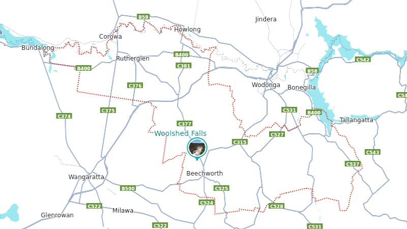
Map of the Indigo Shire, VIC
ABOUT
The Shire of Indigo covers an area of 2,040 square km and has a population of 17,368. It includes
the towns of Beechworth, Chiltern, Rutherglen and Yackandandah. There’s the extraordinary food
and the wine, the extensive Rail Trails, the spectacular seasons (especially autumn). And there’s
Australia's most significant collection of historic towns. Industry is mainly farming, including beef,
sheep, dairy, horticulture and viticulture.
TOP
MAIN
HOME
PREV
NEXT
WINE REGION
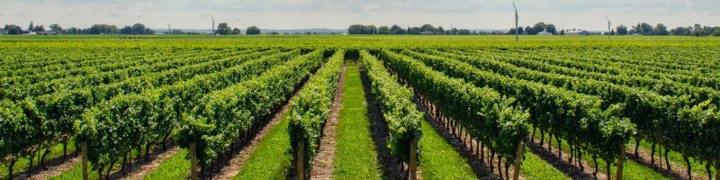
Grape Vineyard in the Rutherghlen Wine Region, VIC
Wahgunyah, VIC has a population of 1,098 and is located just over the Murray River from
Corowa, NSW. The area is well known for having some of the states oldest and newest wineries
including All Saints, Cofields and Valhalla. All Saints Estate Winery to the north of town has an
extensive cellar building, in part modelled on the Castle of Mey near Caithness, Scotland. The main
factory of Uncle Tobys, the breakfast cereal arm of Nestlé, is on the southern outskirts of town.
Cycle the Rail Trail Ride to Rutherglen or the Bridge to Bridge track.
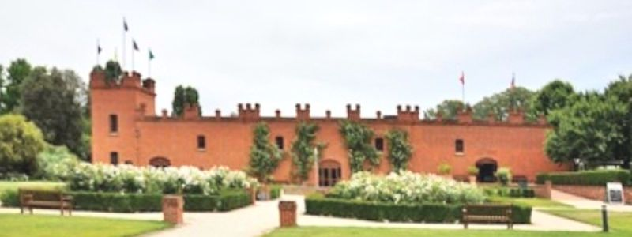
All Saints Estate Winery at 205 All Saints Road, Wahgunyah, VIC
Link to Wahgunyah
Link to Wahgunyah
Link to All Saints
Link to Cofields
Link to Valhalla
TOP
MAIN
HOME
PREV
NEXT
Lake Moodemere, VIC is a natural billabong abundant with native birds and wildlife. It also has
the Lake Moodemere Trail Walk through a delightful river red gum forest which is shaded in
summer. Experience the splendour of Lake Moodemere with a picnic or even a swim. The lake is
host to the Rutherglen Rowing Regatta every January. It is the oldest continually run regatta in
Australia with the first event held in 1863.
At the turnoff from the Murray Valley Highway onto Moodemere Road is the Lake Moodemere
Estate Vineyard, featuring a restaurant, cellar door sales and accommodation. Turn onto Lake
Road to see thje Rutherglen Rowing Club shed, only a short distance to the picnic grounds,
observation platform and boat-ramp on the lake.
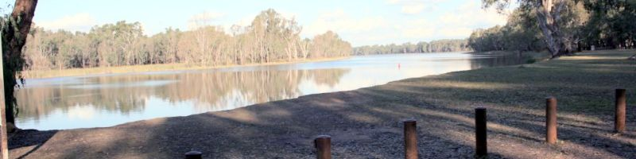
Lake Moodemere, 5km west of Rutherglen
Link to Moodemere
Link to Moodemere
Link to Walk
Link to Vineyard
Rutherglen, VIC has a population of 2,579 supporting many local vineyards and cutting edge
cuisine and luxury accommodation. The Wine Experience and Visitor Information Centre is located
at 57 Main Street and should be your first port of call. The centre offers bike hire including two
tandem bikes and the centre is situated at the start of the Rutherglen to Wahgunyah section of the
Murray to Mountains Rail Trail.
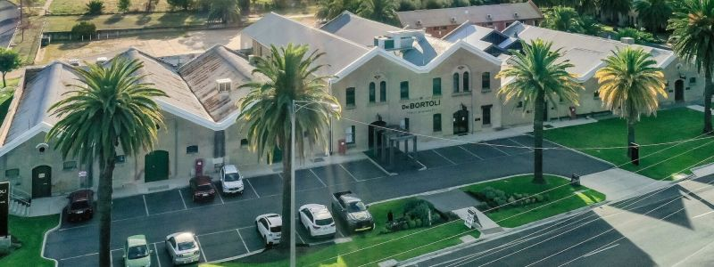
de Bortoli Cellars at 13-35 Drummond Street in Rutherglen
Link to Rutherglen
Link to Rutherglen
Link to Rutherglen
Link to Rutherglen
Link to Wines
Link to Wines
TOP
MAIN
HOME
PREV
NEXT
INLAND TOWNS
Chiltern, VIC has a population of 1,580. It is the birthplace of Prime Minister John McEwen. The
town is close to the Chiltern-Mount Pilot National Park and was once on the main road between
Melbourne and Sydney but is now bypassed by the Hume Freeway running one km to the south.
The area of Chiltern was on the Wahgunyah cattle run and was known as Black Dog Creek. The
township, named after the Chiltern Hills in England, was surveyed in 1853 but not established until
gold discoveries in 1858-59 during the greater Victorian Gold Rush period. The Post Office opened
on 1 September 1859.
The Grape Vine Hotel, on the corners of Main Street and Conness Street, boasts the largest
grapevine in Australia, planted in 1867. The winning clip of the 2009 J Award for Best Music Video
of the Year, Alex Roberts' video for Art vs. Science's "Parlez-vous Français?", was entirely shot in
this town. Several movies have been shot using Chiltern's well-preserved Victorian-era
streetscapes, including Walt Disney's Ride a Wild Pony.
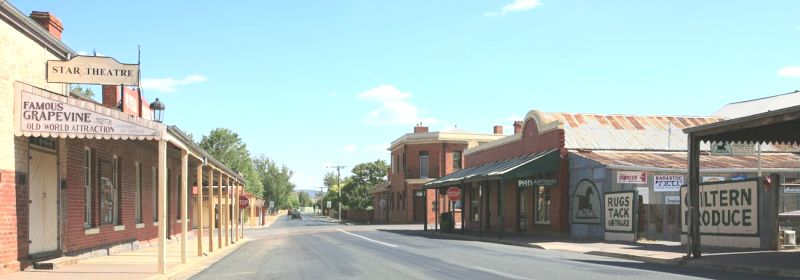
Conness Street / Chiltern-Barnawatha Road at Chilten, VIC
Link to Chiltern
Link to Chiltern
Link to Chiltern
Link to Chiltern
Link to Chiltern
Barnawartha, VIC Barnawartha has a population of 987 and is located on the banks of Indigo
Creek which runs into the Murray River to the north. The commercial centre is located around
High Street, the Indigo Creek Park accessed via High Street fronts the creek. The town contains a
few historic buildings, such as the general store and Cheesely's Bootmakers shop (now used to
store hay) a burnt and rebuilt pub, and a post office.
The township was settled in 1860 with the Post Office opening on 1 August 1860. Gustav and
William Baumgarten were large land owners in Barnawartha prior to the township being settled.
After serving prison time for receiving stolen horses from the infamous Ned Kelly, William
developed a large winery called Bogong, on the Murray River.
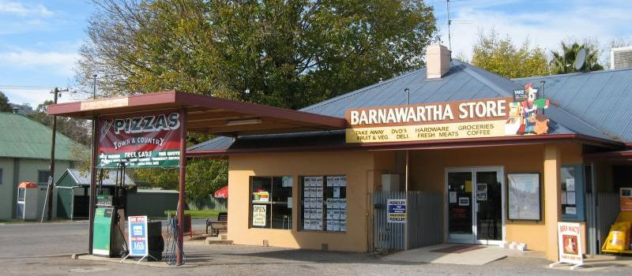
Barnawartha Store, corner High and Havelock Streets, Barnawartha, VIC
Link to Barnawartha
Link to Reserve
TOP
MAIN
HOME
PREV
NEXT
Woolshed Falls, VIC are located in the Chiltern-Mt Pilot National Park, only a 10 minute drive
from Beechworth and are a popular destination for nature lovers and history buffs. The area was
once the centre of one of the richest goldfield’s in Australia, where up to 8,000 prospectors camped
along the banks of Spring Creek.
You can view the cascading falls, enjoy a leisurely picnic or take a self-guided walk around the
alluvial gold workings. An observation deck provides views to falls and the valley below, which is
particularly spectacular after heavy rainfalls. Please be very careful on the rocks as they are
slippery and kids should not be left unsupervised in this area. Suitable, sturdy footwear is advised.
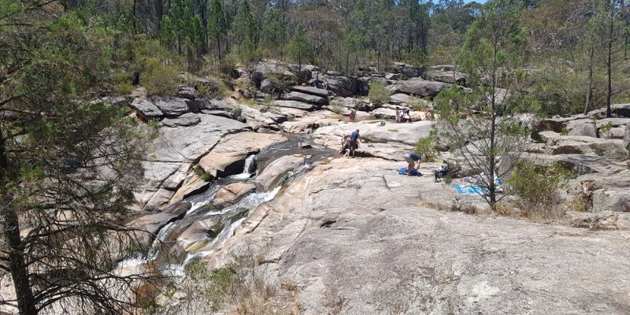
Woolshed Falls, VIC
(c) Catherine Cavallo - 15/05/2018
Link Woolshed Falls
Link Woolshed Falls
Beechworth, VIC Beechworth has a population of 3,290 and is a historical town, famous for its
major growth during the gold rush days of the mid-1850s. Beechworth's many buildings are well
preserved and the town has re-invented itself to evolve into a popular tourist destination and
growing wine-producing centre.
Originally used for grazing by the settler David Reid, the area was also sometimes known as
Mayday Hills until 1853. The Post Office opened on 1 May 1853 as Spring Creek and was renamed
Beechworth on 1 January 1854. Between 1852 and 1857, Beechworth was a gold-producing region
and centre of government; however, its power, wealth and influence were short-lived.
Ned Kelly had many links to Beechworth – he spent time in HM Prison Beechworth and fought a
famous boxing bout with Isaiah "Wild" Wright in the back of a local hotel. Aaron Sherritt and Joe
Byrne of the Kelly Gang came from the Woolshed goldmining camp, outside of Beechworth town.
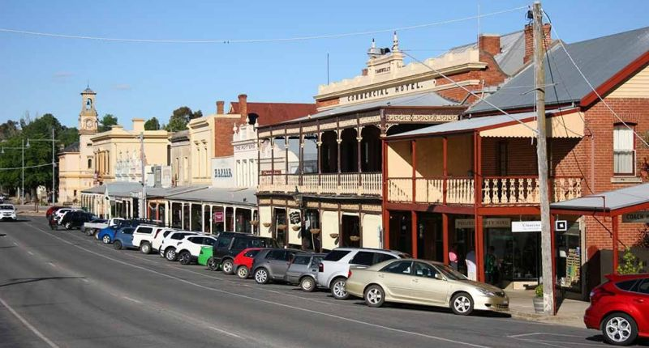
Ford Street, Beechworth, VIC
By Carole Mackinney - Author,
CC0, https://commons.wikimedia.org/w/index.php?curid=27481060
Link to Beechworth
Link to Beechworth
Link to Beechworth
TOP
MAIN
HOME
PREV
NEXT
Stanley, VIC has a population of 324 and is noted for its apple and nut farms. The town was
formerly known as Snake Gully and Nine Mile Creek. Many parts of this rural community have the
remains of gold diggings from the Victorian gold rush of the mid-1800s. During the gold era, the
Stanley region comprised a higher proportion of miners from Scotland and like many goldfields in
northeastern Victoria there was a Chinese presence. The gold mining carried out in the district
involved (wet) sluicing operations.
The town centre includes the Old Store Cafe (closed), Stanley Hotel, Primary School (closed in
2012 and currently not used as a school), CFA Fire Shed, Uniting Church, Recreational Reserve,
Town Hall and Athenaeum (library). A store was built by Syd Mathieson (circa 1852). The Post
Office was officially recognised and opened on 1 October 1857 as Nine Mile Creek and was
renamed Stanley the next year, but ceased trading in 2010. There remain only two of the original
buildings in Stanley, they being the store and powder magazine at the rear and the old police lock-
up on Collins Road.
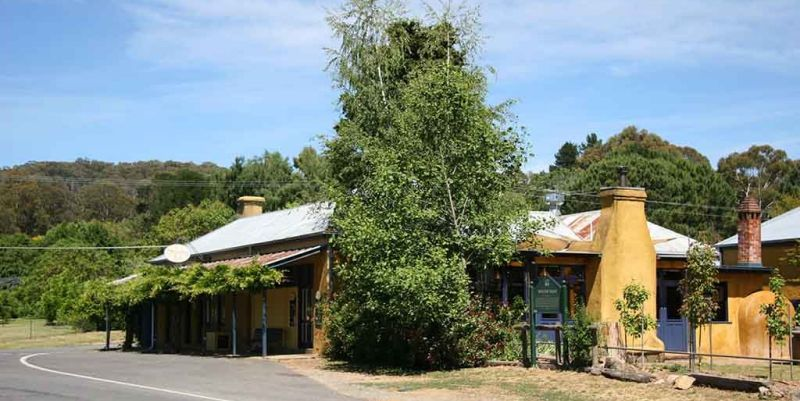
Stanley, VIC
Link to Stanley
Link to Stanley
Link to Stanley
Yackandandah, VIC has a population of 2,008. The area was first opened to white settlement
when James Osborne took up land at Osborne's Flat in 1844. On the discovery of gold deposits on
its territory in 1852, it became a gold mining centre known for its alluvial wet mining techniques.
Yackandandah Post Office opened on 13 June 1856.
The area is now predominantly a dairy farming and forestry region and has numerous bed and
breakfast lodges which allow its many visitors to enjoy the peace and tranquillity of the district's
forest and mountains. It is close to achieving self-sufficiency in energy supply, foreseen to be
reached by 2024, based on solar power. The commercial centre of the town, known as the
Yackandandah Conservation Area, is recorded on the Register of the National Estate.
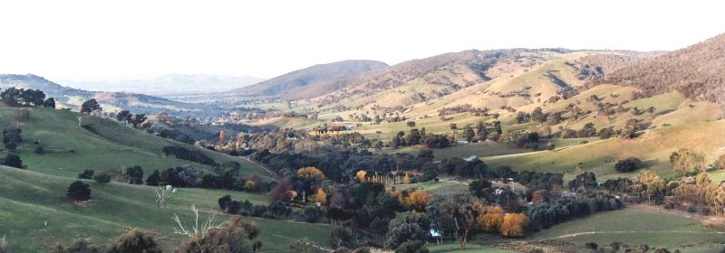
Yackandandah, VIC
Link Yackandandah
Link Yackandandah
Link Yackandandah
Link Yackandandah
Link Yackandandah
Link to Solar Power
TOP
MAIN
HOME
PREV
NEXT
|